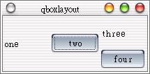

這邊介紹基本的版面配置最後一個，日後還會有進階的版面配置。
與QHBox、QVBox版面配置方式類似，但功能更多的是QHBoxLayout與QVBoxLayout，它們的父類別是QBoxLayout，而QBoxLayout的父類別是QLayout。
QHBoxLayout與QVBoxLayout一個是水平置入Widget，一個是垂直置入Widget，它們也可以置入一個QLayout版面配置，下面這個例子簡單的示範了這兩個類別的使用：
#include <qapplication.h>
#include <qlayout.h>
#include <qlabel.h>
#include <qpushbutton.h>
int main(int argc, char **argv) {
QApplication app(argc, argv);
QWidget *wm = new QWidget;
QHBoxLayout *box1 = new QHBoxLayout(wm, 2, 2);
QVBoxLayout *box2 = new QVBoxLayout(wm, 2, 2);
box1->addWidget(new QLabel("one", wm));
box1->addWidget(new QPushButton("two", wm));
box1->addLayout(box2);
box2->addWidget(new QLabel("three", wm));
box2->addWidget(new QPushButton("four", wm));
app.setMainWidget(wm);
wm->show();
return app.exec();
}
我們相信您現在應可以看懂這個程式碼的內容，因為它只是一些簡單的Widget加入與Layout加入的動作，程式的執行結果如下：

|
|